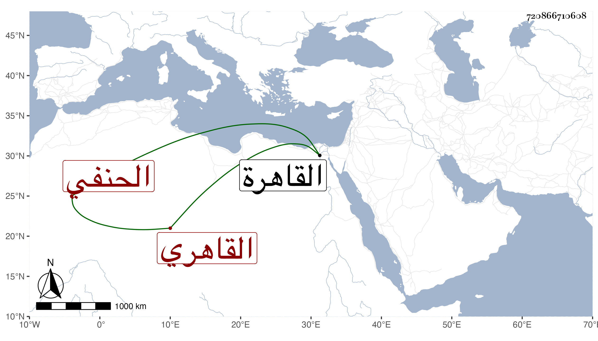

0902Sakhawi.DawLamic.ITO20230111-ara1.EIS1600.720866710608
Biography ID: 720866710608
275
محمد بن محمد بن عبد الرحيم بن محمد بن أحمد أبي بكر بن صديق الكمال أبو الفضل بن المعين أبي الخير بن التاج أبي اليسر القاهري الحنفي الماضي أبوه وجده ويعرف بابن الطرابلسي . ولد بالقاهرة ونشأ فحفظ القرآن وكتبا وعرض على جماعة واشتغل قليلا وأجاز له باستدعاء الزين رضوان مؤرخ برمضان سنة سبع وثلاثين جماعة منهم البدر حسين البوصيري والجمال عبد الله بن عمر بن جماعة وأخته سارة وناصر الدين الفاقوسي والتاج الشرابيشي والبدر بن روق وشيخنا ولا أستبعد أن يكون سمع منه في آخرين . وناب في القضاء واستقل بجهات أبيه بعده كتدريس العاشورية ولازكوجية ، وحج في الرجبية وغيرها وكان ذا ذوق ونظم . مات بعد توعك مدة طويلة بالفالج ونحوه في ليلة الخميس تاسع عشر ربيع الأول سنة تسع وثمانين وصلى عليه من الغد ثم دفن بتربة الصوفية الكبرى وسمعت أنه تاب وأناب رحمه الله وعفا عنه .
